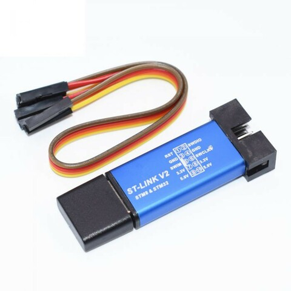

司徒目前使用SDCC Compiler當作編譯器，而燒錄程式則是stm8flash，安裝步驟如下：
$ sudo apt-get update
$ sudo apt-get install sdcc -y
$ cd
$ git clone https://github.com/vdudouyt/stm8flash.git
$ cd stm8flash
$ make
$ sudo make install
$ stm8flash
Usage: stm8flash [-c programmer] [-p partno] [-s memtype] [-b bytes] [-r|-w|-v] <filename>
Options:
-? Display this help
-c programmer Specify programmer used (stlink, stlinkv2 or espstlink)
-d port Specify the serial device for espstlink (default: /dev/ttyUSB0)
-p partno Specify STM8 device
-l List supported STM8 devices
-s memtype Specify memory type (flash, eeprom, ram, opt or explicit address)
-b bytes Specify number of bytes
-r <filename> Read data from device to file
-w <filename> Write data from file to device
-v <filename> Verify data in device against file
-V Print Date(YearMonthDay-Version) and Version format is IE: 20171204-1.0
-u Unlock. Reset option bytes to factory default to remove write protection.
燒錄器則是使用ST-LINK V2
